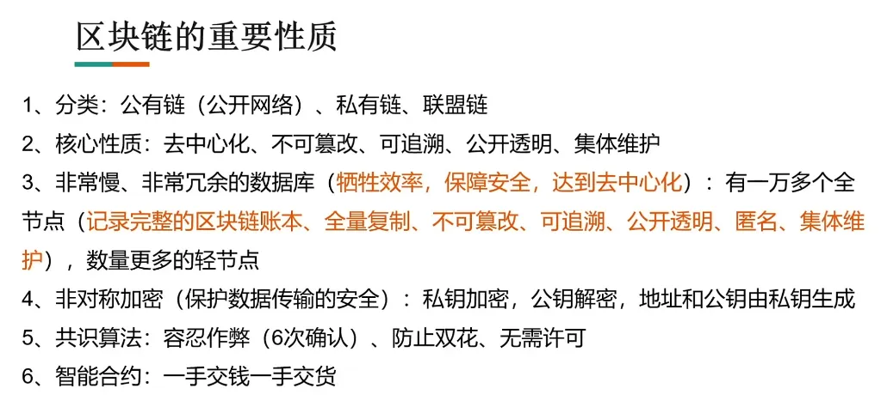
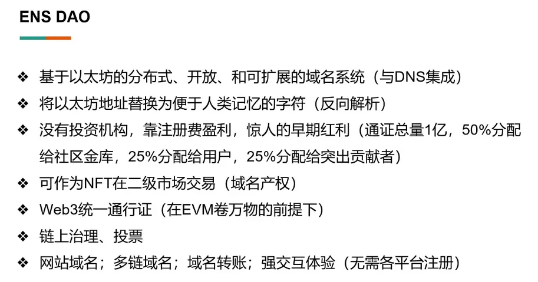
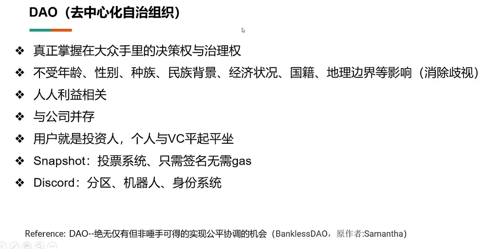
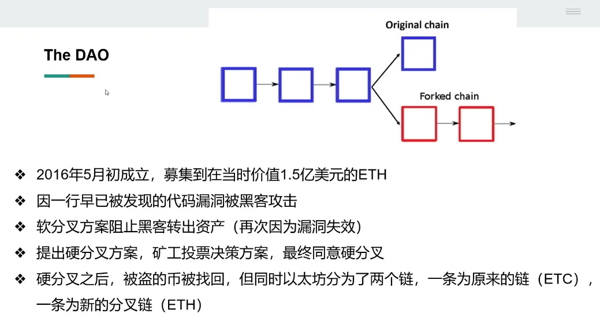
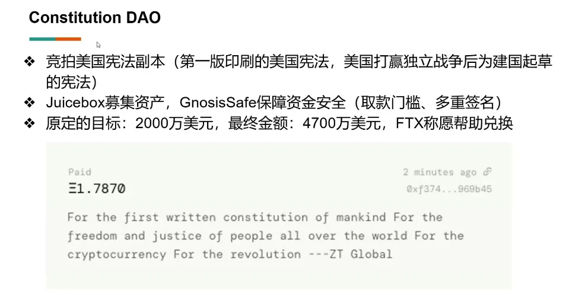
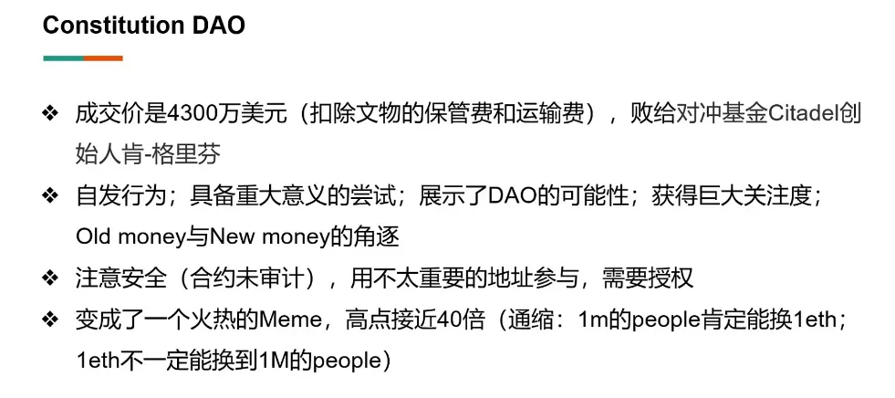
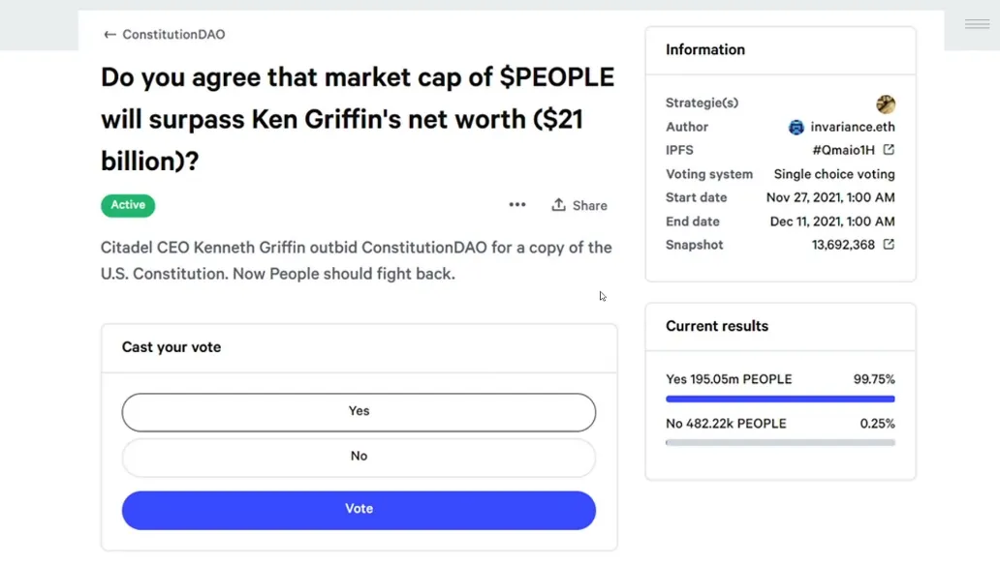
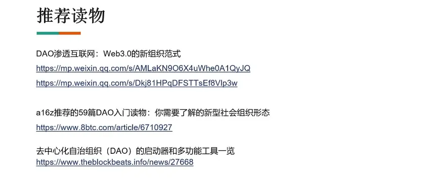

从区块链出发的元宇宙与 Web3
约 359 个字 21 张图片 预计阅读时间 1 分钟
这篇文档是我 2022 年 5 月学习《从区块链出发的元宇宙与 Web3》视频时整理的笔记。原视频发布于 B 站，不知何原因已下架，目前仅存于 YouTube 缓存。
视频缓存：https://www.youtube.com/watch?v=4hjfYUf7d9c
视频中梳理了元宇宙与 Web3 的主流定义，回顾了区块链的核心原理与特性，并重点探讨了区块链如何从技术、治理、创作者经济及组织形式等维度，支撑起元宇宙与 Web3 的构建与发展。内容涵盖 NFT、DAO、ENS 等关键案例，也引述了多位领域内知名投资者的观点。
现将笔记公开分享，既为个人学习存档，也希望能为同样对区块链、元宇宙与 Web3 感兴趣的朋友提供一份结构化的参考。
元宇宙、Web3 主流定义 ¶


区块链的原理与基本性质 ¶


区块链如何支持元宇宙与 Web3？¶
基于区块链的不同视角 ¶
A16Z 合伙人、Coinlist 创始人、Paradigm 联合创始人观点


注：两位大佬播客对话视频值得一看
利他的 ETH 基金会与 ENS DAO ¶

注：加密市场是个不可能忽视的市场

赋权创作者的 NFT ¶

全新的治理、协作组织形式 DAO ¶




注：作者看好这个

区块链的三难问题 ¶

我们的链上名片 ¶

参考资料与推荐读物 ¶

